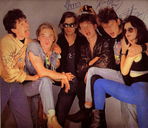

«Се́ктор Га́за» — советская и российская рок-группа из Воронежа, основанная в конце 1987 года музыкантом, вокалистом и автором песен Юрием Клинских, более известным под псевдонимом Юра Хой. 9 июня 1988 года состоялось первое выступление группы в электрическом составе в местном рок-клубе при ТЭЦ, там группа получила приз зрительских симпатий. Однако традиционно датой основания группы считается 5 декабря 1987 года, когда состоялось первое сольное выступление Юрия Клинских с репертуаром будущего «Сектора Газа» в воронежском рок-клубе.